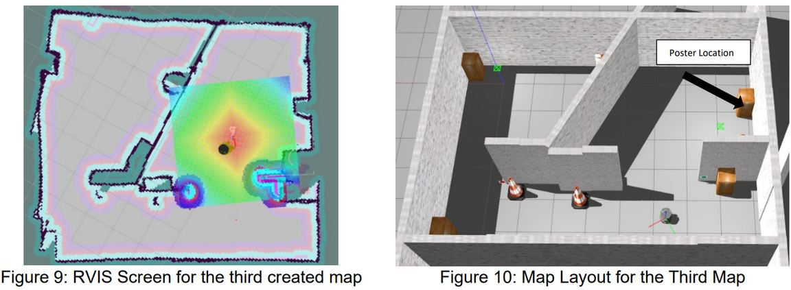
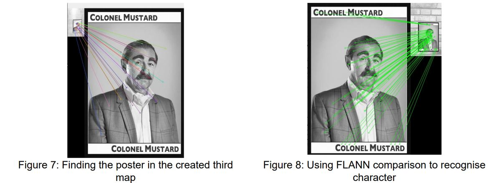

University of Leeds · Team of 4 · Jan to May 2023
I developed the image recognition that let our autonomous robot identify rooms and target images. It recognised the target every time, across five different maps, in simulation and in a real maze, even when parts of the image were blocked.

Reliability
Every target identified
Successful recognition in all tests across five varied maps.
Robustness
Worked despite occlusion
Recognised characters even with parts of the poster blocked.
Sim to real
Gazebo and a real maze
The same software ran in simulation and on the physical robot.
Autonomy
Mapped as it searched
Lidar built the map and kept the robot clear of obstacles.
Simulate and control a TurtleBot that explores an unknown room or maze, finds a poster and identifies the character on it.
It had to work in Gazebo and on a real robot, across different layouts, with changes in environment and partly hidden images.
I developed the image recognition code in Python and OpenCV that let the robot identify rooms and the target images, using SIFT feature extraction and FLANN matching against reference images.
My vision code ran within the team's ROS2 system, alongside lidar mapping and obstacle avoidance, on a team of four.
My recognition code identified the target in every test across five varied maps, in simulation and in a real maze.
It coped with occlusion and changes in environment, and carried over from simulation to the real robot.
| Result | Targets found in all tests, 5 maps |
|---|---|
| My part | Image recognition: identifying rooms and target images |
| Platform | TurtleBot, ROS2 |
| Language | Python |
| Sensing | Lidar and camera |
| Navigation | Lidar mapping and obstacle avoidance |
| Vision | OpenCV, SIFT feature extraction, FLANN matching |
| Testing | Gazebo simulation and a physical maze |
| Team | 4 students, Jan to May 2023 |

Contact